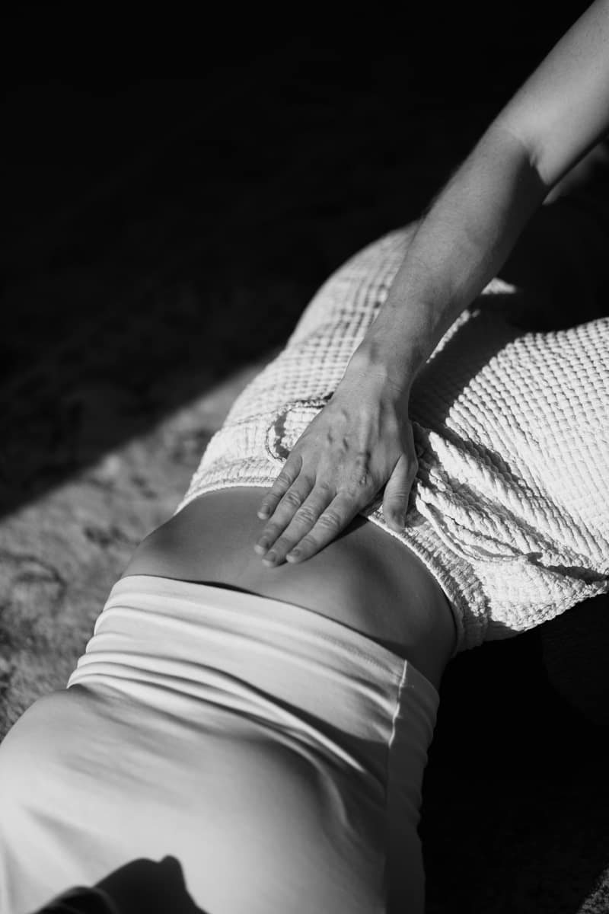
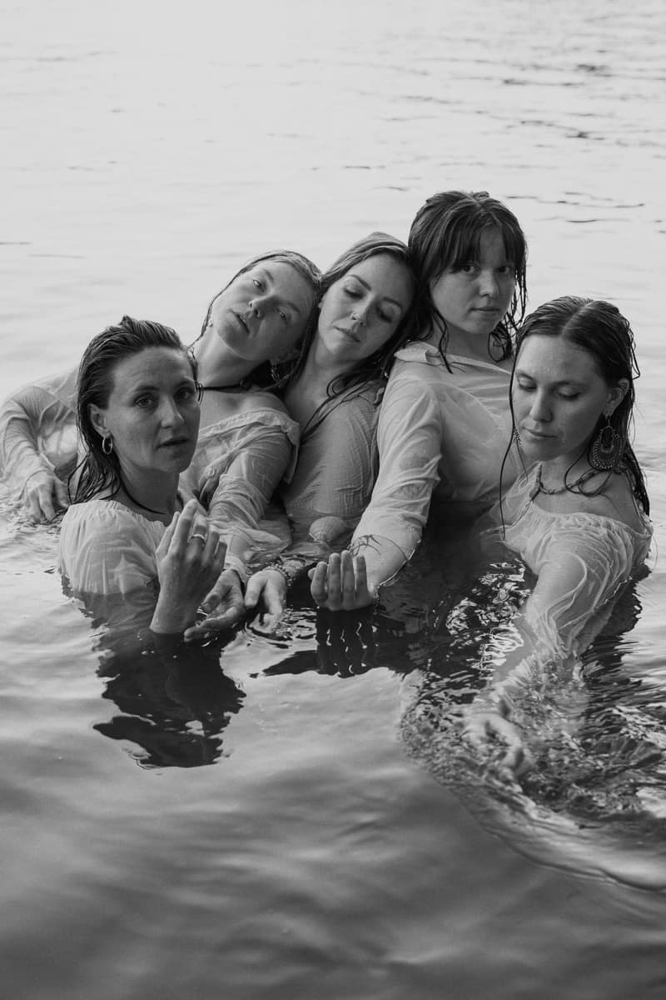
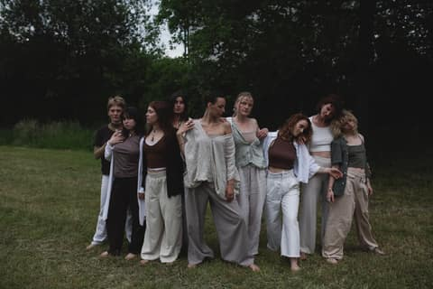
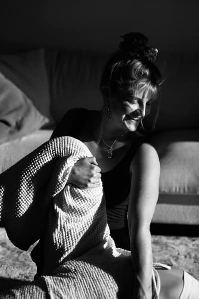

Fluider Tanz · 1:1 · Kriens bei Luzern
Weichheit, die weiss, wohin sie geht
Loslassen und deine Richtung halten, beides zugleich. Das übe ich mit dir, im fluiden Tanz und in der Arbeit zu zweit. Am Montag bist du trotzdem wieder da. Nur kommt dein Körper diesmal mit.

Die Energie
Gelebte Weichheit
Zwei Dinge gehören hier zusammen. Das eine ist Loslassen: fühlen statt funktionieren und deinem Körper Raum geben, dich zu bewegen. Das andere ist Halten: wissen, was du willst, und deine Energie bündeln, statt sie überall zu verschütten. Ich nenne das Vertikalität.
Nur Halten, und du wirst steif. Du funktionierst, du leistest, du ziehst durch. Nur Loslassen, und du läufst über. Du nimmst zu viel auf dich und willst es allen recht machen.
Wasser kann beides. Es weicht deiner Hand aus und findet trotzdem seinen Weg ins Meer.
Ein Fluss ist Wasser, das Ufer hat.
Wo steht dein Wasser heute?
Schieb den Regler von erstarrt bis über die Ufer. Irgendwo in der Mitte beginnt es zu fliessen.
Du kriegst alles erledigt. Um zehn ist dein Kiefer schon angespannt, der zweite Kaffee ist kalt geworden, und Fühlen kommt später dran.
Was es dir schenkt
Was sich ändert, wenn du im Fluss bist
Dein Körper
Du merkst die Müdigkeit, solange sie noch flüstert, nicht erst, wenn sie schreit. Dein Körper ist nicht länger nur das, was dich zu Terminen trägt. Er hat wieder etwas zu sagen.
Deine Beziehungen
Du kannst Ja sagen und es so meinen. Du kannst Nein sagen, ohne eine Rede zu halten. Berührung fühlt sich weniger aufgeladen an und mehr nach dem, was sie ist: das Normalste zwischen Menschen.
Deine Arbeit
Du lieferst weiterhin. Du bezahlst es nur nicht mehr mit allem, was du hast. Dranbleiben fällt leichter, wenn du nicht auf Reserve läufst.
Das Jetzt
Du hörst auf zu warten, dass du irgendwo ankommst. Wofür du gekommen bist, geschieht schon im Raum, in diesem Treffen und im nächsten.
Gesehen werden
Du erlaubst dir, dich vor anderen so zu bewegen, wie du bist. Dein Tanz wird weicher und runder, und du traust dich mehr, gesehen zu werden. Im Tanz und in deinem Leben.
Ehrlich gesagt
Warum es noch nicht fliesst
Nichts davon ist ein Fehler. So lernt ein Körper, der fürs Funktionieren belohnt wurde.
- Du funktionierst. Du stehst auf und machst es, weil es ja gemacht werden muss. Das Fühlen wird aufs Wochenende verschoben, und das Wochenende ist voll.
- Du lebst von der Reserve. Kaffee ist nicht der Feind. Aber wenn du ihn brauchst, um dich wie du selbst zu fühlen, will etwas gesehen werden.
- Wollen ist dir ein bisschen peinlich. Wann hat dich zuletzt jemand gefragt, was du wirklich willst? Hattest du eine Antwort, in der es nicht um jemand anderen ging?
- Sogar das Tanzen wird zur Vorführung. Die richtigen Schritte, die richtige Haltung. Wenn du dich zeigst, wie du bist, wirst du sichtbar. Und sichtbar sein kann sich anfühlen wie Angriffsfläche.
- Zu wenig Berührung. Viele von uns werden tagelang nicht gehalten. Dabei sind wir dafür gemacht, einander zu beruhigen, Körper an Körper.
Nichts davon ist ein Fehler. So lernt ein Körper, der fürs Funktionieren belohnt wurde.

Warum Wasser
Woher nimmst du eigentlich deine Energie?
Es heisst nicht zufällig The Water Devotion. In der Chinesischen Medizin ist Wasser das Element der Nieren, und diese Tradition sieht dort unsere tiefste Lebensenergie. Ich nenne sie gern das wahre Bankkonto unten in deinem Rücken.
Die meisten von uns leben vom Lohnkonto. Kaffee, durchziehen, noch schnell eine Sache. Das geht eine Weile gut. In diesem alten Bild zehren wir dabei aber leise vom Ersparten.
Wasser erinnert mich immer wieder an eine Frage: Woher nehme ich meine Energie? Die Antwort ist langsam und einfach. Du zahlst auf dieses Konto ein mit
- Übung
- Berührung
- guten Beziehungen
- Ruhe
Und dann noch einmal Ruhe.
Das ist ein überliefertes Bild aus der Chinesischen Medizin, eine Art, aufs Leben zu schauen, und keine medizinische Aussage. Die Übungen auf dieser Seite sind keine medizinische Behandlung und ersetzen keinen Arztbesuch.
Die Praxis
Vier Wege im Fluss

01
Fluide Bewegung
Hingabe heisst ganz einfach Wiederholung. Gelenke werden fluide, so wie ein Pfad zum Pfad wird: indem man ihn geht. Alles Neue will ein Stück Verbindlichkeit.

02
Berührung & ZenThai Shiatsu
Bewusste Berührung und sanfte Bewegung, ein Tanz mit dem Körper. Gehalten zu werden lässt dich spüren: Da ist keine Trennung.
ZenThai Shiatsu ist eine Praxis für dein Wohlbefinden. Es ersetzt keine ärztliche Diagnose oder Behandlung.

03
Ruhe
Nicht die Belohnung, wenn alles erledigt ist. In der Ruhe kommt das Üben an.

04
Dance Journeys
Gemeinsam in Bewegung, vor Ort in Luzern. Kontaktimprovisation, Kreativität im Kontakt und die Überraschung, wenn andere deinem Tanz begegnen.
Hilfsmittel helfen. Du brauchst sie nicht. Für die meisten reicht es, dass jemand da ist und mitgeht. Diese Präsenz ist schon genug.

Über mich
Ich heisse Lucy
Ich bin in Hamburg geboren und aufgewachsen und unterrichte heute in Luzern. Der Tanz begleitet mich, seit ich ein kleines Kind war, und mit 16 habe ich angefangen, ihn zu unterrichten. Nach Jahren mit Choreografien und Bühnen fing mein Körper an, durch Schmerz zu sprechen. Er wollte nicht übergangen werden.
Er hat mich zum freien Tanz und zur fluiden Bewegung geführt, zu einem Tanzen, bei dem das Fühlen zuerst kommt. Seit ich ZenThai Shiatsu lerne, berührt es mich immer wieder, wie sanft und manchmal wie glasklar der Körper zu uns spricht.
Menschen sagen mir, dass ich Ruhe in einen Raum bringe. Innerlich bin ich sehr lebendig. Vielleicht ist genau das der Punkt.
Ich kann viel halten. Wenn du dich auf den Raum mit mir einlässt, bin ich da.
Ich freu mich aufs gemeinsame Fliessen. Lucy
Unsere Zusammenarbeit
The Fluid Self
Nach drei Monaten weisst du, wie du an einem ganz gewöhnlichen Dienstag zurück in deinen Körper findest. Du kannst loslassen, ohne auseinanderzufallen, und deine Richtung halten, ohne steif zu werden.
Ein Treffen dauert 90 Minuten. Wir kommen an, bewegen uns langsam und angeleitet, ohne Schritte, die du lernen musst, und sprechen über das, was aufgetaucht ist. Oder wir gehen in ein Thema, das gerade Aufmerksamkeit will. Tanzerfahrung brauchst du keine.
Berührung gehört nur dazu, wenn du es möchtest. Du sagst, was sich stimmig anfühlt, und das darf sich von Mal zu Mal ändern.
Drei Monate, weil Hingabe Wiederholung braucht. Das hier ist kein Probelauf.
So läuft es ab
- Ein kostenloses KennenlerngesprächFür den Moment, in dem du neugierig bist und dir eine Zusammenarbeit vorstellen kannst. Etwa 20 Minuten, am Telefon oder per Video. Alle Infos stehen hier, auch der Preis, damit wir einfach spüren können, ob es passt.
- Du entscheidest in deinem TempoWenn es ein Ja ist, legen wir die sechs Termine fest.
- Drei Monate, sechs TreffenDazwischen übst du und schreibst mir, wenn sich etwas bewegt.
Du möchtest die Praxis zuerst spüren? Eine aufgezeichnete Online-Stunde ist ein sanfter Einstieg. Frag einfach.

Dance Journeys & Workshops
Gemeinsam in Bewegung, vor Ort in Luzern. Im Voraus bezahlt, damit wir am Tag selbst alle einfach ankommen können.
Zu den nächsten Terminen →
ZenThai Shiatsu
90 Minuten bewusste Berührung, vor Ort. Eine Praxis für dein Wohlbefinden, keine medizinische Behandlung.
Die Körperarbeit entdecken →Stimmen aus der Praxis
Was Teilnehmende spüren
„Mein Ausdruck hat sich tief geöffnet, und ich fühle mich viel verbundener mit meinem Körper, mit mir selbst. Für mich ging diese Erfahrung weit über das Tanzen hinaus.“
„Diese Reise hat mich wieder daran erinnert, wie tief meine Leidenschaft fürs Tanzen wirklich ist und wie sehr ich meine Praxis pflegen und weiten möchte.“
„Drei Monate voller Tiefe, Berührung, Erkunden, Weiten, Integrieren und Ich-selbst-Werden. Schritt für Schritt.“
Warum mir das wichtig ist
Sich ernst nehmen
So oft lernen wir, unsere Stimme und unsere Präsenz kleiner zu machen, statt sie zu feiern. Viele lernen, noch mehr zu leisten. Viel weniger lernen zu fühlen.
Ich wünsche mir mehr Körper, die weich sein dürfen und trotzdem wissen, wohin sie gehen. The Water Devotion ist mein Beitrag dazu.
Tauch ein, ganz sanft
Alles liegt offen auf dem Tisch: das Format, der Preis, die Art, wie wir arbeiten würden. Wenn es dich hinzieht, lernen wir uns einfach kennen.
Kostenloses Kennenlerngespräch vereinbarenÖffnet eine E-Mail an Lucy · lucy@thewaterdevotion.com